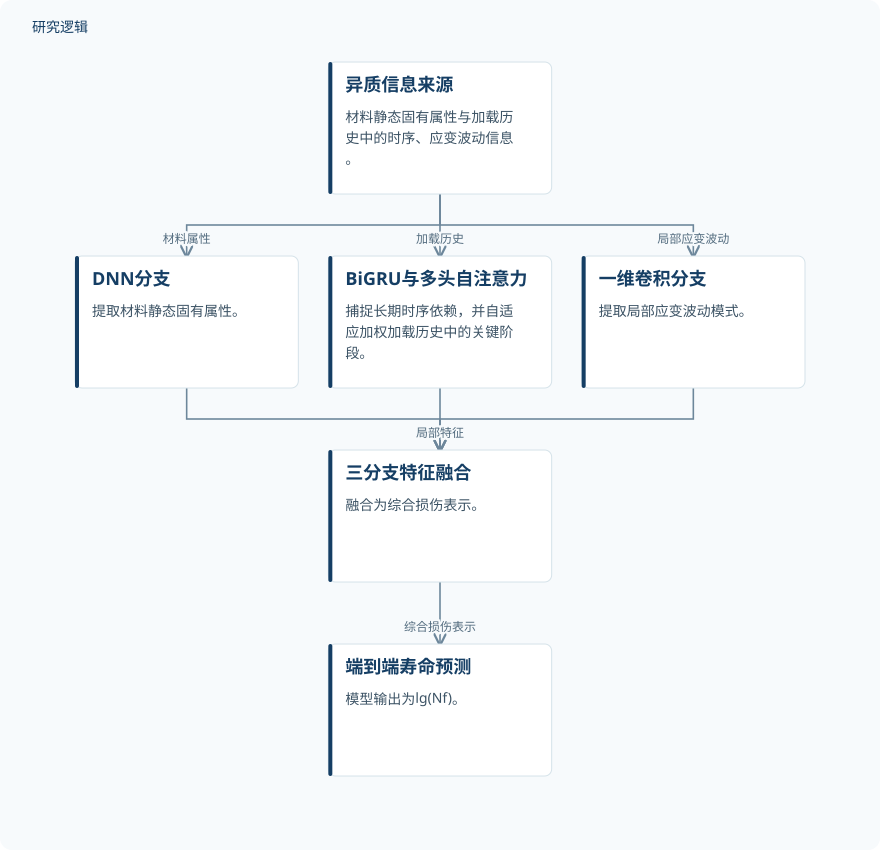

摘要解读
面向金属多轴疲劳寿命预测的异构多模态并行深度学习框架
A Heterogeneous Multi-Modal Parallel Deep Learning Framework for Multiaxial Fatigue Life Prediction of Metals
解读更新 2026-11-10 13:58 · 依据公开摘要整理，未核验全文细节
复杂非比例载荷下，金属疲劳寿命预测不仅需要识别材料差异，还要理解加载历史。本文将材料属性、长期时序依赖与局部应变波动交给不同神经网络处理，值得关注的是这些信息如何互补，以及预测优势能否经受不同数据划分的检验。
文章目录
多轴疲劳难在损伤随加载路径演化
金属构件的可靠设计受到多轴疲劳损伤的制约，复杂非比例加载尤其具有挑战。摘要指出，传统临界平面模型和能量模型较依赖经验假设，难以充分捕捉复杂的路径相关损伤演化，因而在预测精度与泛化能力上受到限制。
这项研究围绕的核心问题是：如何同时利用材料本身的静态信息，以及加载过程中不同时间尺度的变化信息，建立面向疲劳寿命的统一预测表示。
三条并行分支分别处理材料、时序与局部波动
框架采用三分支并行神经网络：深度神经网络（DNN）提取材料静态固有属性；结合多头自注意力机制的双向门控循环单元（BiGRU）捕捉长期时序依赖，并自适应地赋予加载历史中关键阶段不同权重；一维卷积神经网络（1D-CNN）提取局部应变波动模式。
三个分支的特征随后融合为综合损伤表示，进行端到端寿命预测。摘要将模型输出记为lg(Nf)，因此阅读后续评价时，需要留意其针对的是寿命的对数表示，而非直接输出的寿命数值。
依据摘要整理的三分支融合预测示意


概括摘要明确描述的信息处理与融合关系，不表示具体输入配置、网络参数或论文原图。
下载 SVG图示关系说明
实线表示相邻阶段的信息流，虚线表示跨阶段联系或反馈。
异质信息来源 → DNN分支：材料属性；异质信息来源 → BiGRU与多头自注意力：加载历史；异质信息来源 → 一维卷积分支：局部应变波动；DNN分支 → 三分支特征融合：静态特征；BiGRU与多头自注意力 → 三分支特征融合：时序特征；一维卷积分支 → 三分支特征融合：局部特征；三分支特征融合 → 端到端寿命预测：综合损伤表示
固定划分取得较好拟合，增益稳定性仍待确认
研究使用包含40种金属、1167个样本的公开多轴疲劳数据集。在固定数据划分下，模型取得决定系数R² = 0.9052。摘要中重复出现的这一数值对应同一固定划分表现，不应理解为两次独立验证。
摘要报告，消融研究支持三个特征提取分支具有互补性，多源融合与注意力机制对性能提升起关键作用。但5折交叉验证也提示，性能增益仍需更大数据集进一步验证。因此，较好的固定划分结果与尚待确认的增益稳定性，应当同时呈现。
总体样本规模不能替代跨材料与跨路径验证
仅凭摘要，无法判断各金属的样本分布、加载路径覆盖范围、训练测试划分方式，以及是否开展了跨材料或跨加载路径的独立检验。摘要也未给出比较模型的具体结果、消融增益幅度及交叉验证的完整统计信息；这些属于当前资料无法判断的范围，不代表论文没有开展相关工作。
作者将融入物理知识、增强外推能力与透明度列为未来方向，不能据此认定这些能力已经得到验证。当前解读仅依据所提供的完整摘要，不涉及全文实验细节。
阅读启发：关注互补信息能否带来稳定收益
阅读启发：对疲劳可靠性研究，值得进一步追问的不是网络分支是否足够复杂，而是材料属性、长期加载依赖与局部应变波动的互补性，在不同划分条件下是否仍然成立。进一步阅读时，可重点关注消融比较与交叉验证如何相互印证，以及作者如何界定模型适用范围。
建议：若从智能运维角度理解本文，应先区分疲劳寿命预测与实际剩余寿命评估。当前摘要支持前者，尚不足以说明模型已经适用于在线监测、维护决策或工程现场部署。
以上为本站阅读启发与建议，不是论文已验证的结论。